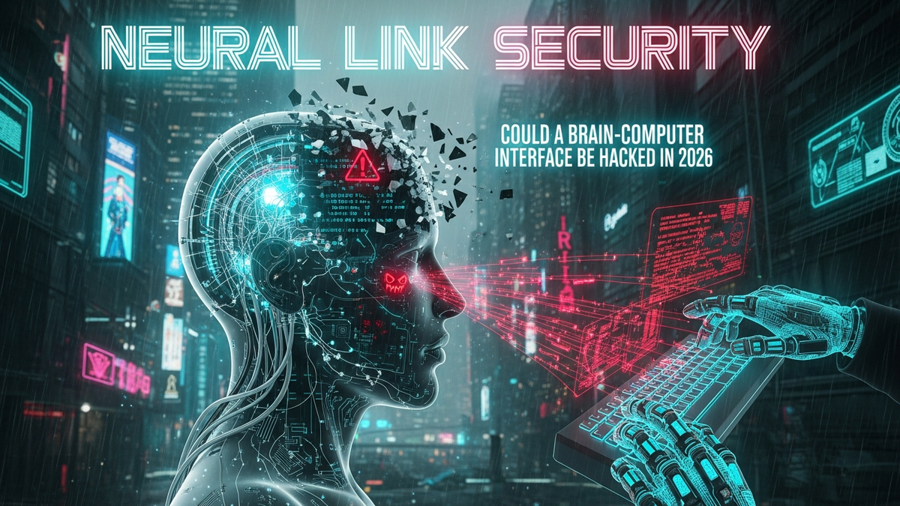

The dawn of brain-computer interfaces (BCIs) ushers in an era where the boundary between thought and technology blurs, promising unprecedented advancements in healthcare, communication, and human augmentation. Companies like Neuralink are at the forefront, developing devices designed to seamlessly integrate with the human brain, translating neural activity into actionable commands and potentially restoring lost functions. Yet, with such profound integration comes an equally profound question: how secure is this neural frontier? Specifically, as we approach 2026, could a device as intimate and critical as a BCI be compromised by malicious actors? The implications of such a breach extend far beyond traditional data theft, touching upon the very essence of identity, autonomy, and mental privacy. This exploration delves into the intricate layers of BCI security, examining current defenses, potential vulnerabilities, the ethical quagmire of neural hacking, and the proactive measures essential to safeguard our most personal data – our thoughts.
Brain-Computer Interfaces represent a revolutionary leap in human-technology interaction, offering a direct communication pathway between the brain and external devices. The promise of BCIs is vast and deeply compelling, particularly in the medical field. For individuals suffering from severe neurological conditions such as paralysis, amyotrophic lateral sclerosis (ALS), or traumatic brain injuries, BCIs hold the potential to restore communication, mobility, and independence. Imagine a quadriplegic person controlling a robotic arm with their thoughts, or a patient with locked-in syndrome typing messages purely through mental commands. Beyond restoration, BCIs also hint at human augmentation, enhancing cognitive abilities, memory recall, and even enabling telepathic-like communication through digital means. Neuralink, spearheaded by Elon Musk, exemplifies this ambition, developing an implantable device that aims to facilitate high-bandwidth data transfer between the brain and computers, initially focusing on medical applications but with broader aspirations for human-AI symbiosis.
However, the very intimacy and power that make BCIs so promising simultaneously cast a long shadow of peril. Integrating technology directly with the brain exposes our most private and fundamental data – our neural signals, intentions, memories, and even emotions – to potential external manipulation. The types of data involved are extraordinarily sensitive: raw electrophysiological signals, decoded motor intentions, sensory perceptions, and potentially even higher-level cognitive states. A breach of this data is not merely a privacy violation; it is an assault on one's very identity. Consider the implications if a hacker could access or, worse, alter the neural patterns associated with decision-making, memory, or emotional responses. The concept of "mental privacy" becomes paramount, demanding a robust defense against unauthorized access, exploitation, or even coercive control. The sheer volume and complexity of neural data, combined with the real-time, bidirectional nature of BCI communication, create an unprecedented attack surface that traditional cybersecurity models may struggle to fully encompass. The ethical and societal challenges posed by potential BCI hacking are immense, threatening the core principles of individual autonomy and mental sovereignty in ways never before contemplated.
Furthermore, the physical implantation of these devices introduces unique risks. Surgical procedures carry inherent dangers, and the long-term biocompatibility and stability of implants within the delicate neural environment are ongoing areas of research and development. Should a BCI be compromised, the consequences could range from benign data leakage to critical device malfunction, potentially causing physical harm or irreversible neurological damage to the user. The distinction between a software vulnerability and a hardware flaw blurs when the hardware is literally inside your head. The urgency of addressing these perils is amplified by the rapid pace of technological advancement. As BCI technology progresses towards more widespread adoption and increased sophistication by 2026, the potential for malicious actors to target these systems grows exponentially, making a proactive and comprehensive approach to security not just advisable, but absolutely imperative for the responsible evolution of this transformative technology.
The security architecture of contemporary Brain-Computer Interfaces, particularly those in advanced development like Neuralink's Link, is built upon a foundation of multi-layered defenses, drawing heavily from established cybersecurity principles for medical devices while also innovating for the unique challenges of neural integration. At the core, data encryption is paramount. Most BCI systems employ robust cryptographic protocols, such as AES-256 (Advanced Encryption Standard with 256-bit keys), to secure data transmission between the implanted device and external processors or applications. This end-to-end encryption ensures that neural signals, whether being read from the brain or translated into commands, remain unintelligible to unauthorized interceptors. Furthermore, secure boot processes and firmware integrity checks are implemented to ensure that only authenticated and untampered software runs on the device, preventing malicious code injection at startup. Hardware security modules (HSMs) or trusted execution environments (TEEs) are increasingly integrated into BCI designs, providing a secure enclave for cryptographic keys and critical operations, isolating them from the main operating system and potential software vulnerabilities.
Beyond cryptographic measures, physical and logical access controls are crucial. The external components of BCIs, such as charging units or data receivers, are typically designed with strict authentication mechanisms, often involving biometric verification or secure pairing protocols, to ensure that only authorized users or medical professionals can interact with the device. Network segregation and stringent firewall rules protect the cloud infrastructure that may process or store BCI data. However, the miniaturization required for implantable devices presents significant security challenges. Limited processing power and battery life can constrain the complexity of encryption algorithms or real-time security monitoring that can be performed on the implant itself. This necessitates a careful balance between security strength, computational overhead, and device longevity. The design philosophy often leans towards minimizing the attack surface by limiting external connectivity and implementing a "least privilege" approach for all software components.
The regulatory landscape plays an absolutely critical role in shaping BCI security. In the United States, the Food and Drug Administration (FDA) oversees medical devices, including BCIs. The FDA has increasingly emphasized cybersecurity requirements for medical devices, recognizing their vulnerability to attacks that could compromise patient safety, privacy, and device functionality. Manufacturers seeking FDA approval for BCIs must demonstrate comprehensive cybersecurity risk management plans, including threat modeling, vulnerability assessments, penetration testing, and plans for post-market surveillance and updates. These regulations mandate that devices are designed with security in mind from the outset (Security by Design) and continue to be secured throughout their lifecycle. International bodies and standards organizations are also developing guidelines specifically for neural technologies, aiming to establish a global baseline for safety, ethics, and cybersecurity. However, the rapid pace of BCI innovation often outstrips the rate at which regulatory frameworks can adapt, creating a dynamic environment where continuous dialogue between industry, regulators, and cybersecurity experts is essential to keep pace with emerging threats and ensure that the security of these transformative devices remains robust and resilient against the evolving threat landscape by 2026 and beyond.
By 2026, as Brain-Computer Interfaces become more sophisticated and potentially more prevalent, the landscape of potential attack vectors will undoubtedly broaden and deepen. One of the most immediate and accessible targets for malicious actors will be the **wireless communication protocols** used by BCIs. Devices like Neuralink often rely on short-range wireless technologies (e.g., Bluetooth, proprietary radio frequencies) to transmit data between the implanted device and an external receiver or application. These wireless links are susceptible to various attacks, including eavesdropping (interception of unencrypted or poorly encrypted signals), signal jamming (disrupting communication to cause denial of service), and spoofing (impersonating a legitimate device to inject false commands or extract data). A sophisticated attacker could potentially intercept neural data streams, gaining access to highly sensitive information about a user's intentions, thoughts, or even emotional states, paving the way for unprecedented privacy violations or targeted manipulation. Furthermore, if the communication protocol is not robustly designed, an attacker might be able to inject malicious commands, potentially altering device settings, triggering unintended actions, or even causing physical discomfort or harm to the user.
Another critical vulnerability lies within **software and firmware exploits**. Like any complex computing system, BCIs run on embedded operating systems and firmware, which are susceptible to zero-day exploits, buffer overflows, and other common software flaws. A successful exploit could allow an attacker to gain unauthorized control over the device, alter its functionality, or extract data. The supply chain for BCI components – from microchips to software libraries – also presents a significant attack surface. A **supply chain attack** could involve injecting malicious code or hardware backdoors at any stage of the manufacturing process, allowing attackers to compromise devices before they even reach the user. Once implanted, a compromised device could then serve as a persistent backdoor into the user's neural data, or even be used to launch further attacks on interconnected systems. The constant need for software updates to patch vulnerabilities also introduces risk; if the update mechanism itself is compromised, malicious firmware could be pushed to devices, turning a security feature into an attack vector.
While more challenging, **hardware tampering and side-channel attacks** could also pose a threat. Although direct physical access to an implanted device is difficult, the external components (e.g., charging units, external processors) could be targeted. Side-channel attacks involve gleaning sensitive information (like cryptographic keys) by analyzing indirect manifestations of a system's operation, such as power consumption, electromagnetic emissions, or even acoustic signatures. For example, differential power analysis could potentially reveal information about the cryptographic operations being performed by the BCI. Beyond these technical exploits, the most alarming, albeit highly speculative, scenario involves **direct user manipulation or control**. If a BCI's output pathways could be compromised, an attacker might theoretically be able to induce specific sensory experiences, influence motor commands, or even subtly alter cognitive processes. While the technical hurdles for achieving such precise and nuanced control are immense and likely beyond the capabilities of most attackers by 2026, the ethical implications of even attempting such a feat underscore the profound importance of impenetrable security for these devices. The ongoing "cat and mouse" game between security researchers and malicious actors ensures that these potential attack vectors will continue to evolve, demanding constant vigilance and adaptive defense strategies.
Humanize your text and bypass any AI detector instantly with Undetectable AI.
BYPASS AI DETECTION NOWThe prospect of Brain-Computer Interface hacking introduces an entirely new dimension of ethical and societal challenges, far surpassing the implications of traditional data breaches. At its core, BCI hacking threatens the fundamental human right to **mental privacy** and **cognitive liberty**. If neural data—representing thoughts, intentions, and emotions—can be accessed or manipulated without consent, the very essence of individual autonomy is undermined. Imagine a scenario where a hacker can read your unspoken thoughts, decipher your decision-making processes, or even subtly influence your impulses. This is not merely an invasion of privacy; it is a direct assault on one's inner sanctum, leading to profound psychological distress, a loss of self-trust, and an erosion of personal boundaries. The psychological impact on an individual whose neural interface has been compromised could be devastating, leading to paranoia, identity confusion, and a pervasive sense of vulnerability. The fear of being constantly surveilled or manipulated through one's own brain could paralyze users and erode public trust in this transformative technology.
Beyond individual harm, the societal ramifications are immense. BCI hacking could lead to unprecedented forms of **identity theft and manipulation**. If neural patterns associated with specific memories or skills could be extracted, they might be replicated, altered, or even weaponized. Consider the potential for blackmail, where sensitive thoughts or private memories are exfiltrated and held for ransom. Political opponents or corporate rivals could be targeted, with their neural data used for profiling, coercion, or to sow disinformation. The integrity of legal systems could be compromised if neural evidence could be tampered with or fabricated. Furthermore, the advent of sophisticated BCI hacking could exacerbate existing societal inequalities, creating a digital divide where those with access to more secure, expensive BCIs are better protected, while others remain vulnerable. This could lead to new forms of discrimination, where individuals with less secure or compromised interfaces are stigmatized or marginalized.
The potential for **weaponization of BCI technology** through hacking is another grave concern. While direct mind control remains highly speculative, even the ability to induce specific sensory experiences (e.g., pain, hallucinations) or to disrupt cognitive functions could be exploited for malicious purposes, ranging from psychological warfare to incapacitation. Such capabilities would necessitate a complete re-evaluation of international laws regarding warfare, surveillance, and human rights. There is an urgent need for the development of robust **legal and ethical frameworks** that specifically address the unique challenges of neural data security and cognitive liberty. Existing data protection laws, such as GDPR, provide a foundation but may not adequately cover the nuances of neural data, which is far more intimate and potentially influential than conventional personal information. International cooperation will be vital in establishing global norms and standards to prevent a fragmented and vulnerable BCI ecosystem. The ethical imperative is clear: as we advance the capabilities of BCIs, we must concurrently develop an equally advanced and comprehensive ethical and legal infrastructure to protect the sanctity of the human mind from the unprecedented threats posed by neural hacking, ensuring that the promise of BCIs is realized without sacrificing fundamental human values.
Protecting Brain-Computer Interfaces from sophisticated cyber threats by 2026 and beyond demands a proactive and multi-faceted approach, leveraging cutting-edge cybersecurity tools and innovative solutions. One of the most critical areas of development is **Quantum-Resistant Cryptography (QRC)**. As quantum computing advances, traditional encryption methods like RSA and ECC, which form the backbone of current BCI security, could become vulnerable. QRC algorithms are designed to withstand attacks from quantum computers, ensuring that neural data remains secure against future computational power. Implementing QRC from the design phase is essential to future-proof BCI communication and data storage, preventing a scenario where today's encrypted neural data could be decrypted years later. This involves researching and integrating lattice-based cryptography, code-based cryptography, and other post-quantum algorithms into BCI communication protocols and secure boot processes.
Another powerful tool is the deployment of **Artificial Intelligence (AI) and Machine Learning (ML) for Anomaly Detection**. BCI systems generate vast amounts of neural data, which can be analyzed in real-time by AI algorithms to detect unusual patterns or deviations from baseline activity. These anomalies could indicate a security breach, a denial-of-service attack, or an attempt at unauthorized data exfiltration. ML models can learn typical neural signal patterns and device behavior, flagging anything that falls outside expected parameters. For example, an unexpected surge in data transmission, an unusual command sequence, or a sudden change in power consumption could trigger an alert. This real-time monitoring, coupled with predictive analytics, can provide an early warning system against both known and novel threats, acting as a crucial line of defense for the continuous integrity of the BCI system and the user's neural data. Furthermore, AI can assist in automated threat hunting and vulnerability discovery within complex BCI software stacks.
**Hardware-Enforced Security** is indispensable for BCIs, given their implantable nature. This involves designing devices with secure enclaves, trusted execution environments (TEEs), and physically unclonable functions (PUFs). Secure enclaves provide isolated processing environments where sensitive operations, such as cryptographic key management and critical command processing, can occur without exposure to the main operating system. TEEs ensure that even if the primary software is compromised, the most critical functions remain protected. PUFs leverage unique, inherent physical variations in microchips to generate device-specific cryptographic keys, making each BCI unique and difficult to replicate or spoof. These hardware-level protections create a robust root of trust, making it significantly harder for attackers to gain deep access or tamper with core functionalities. Additionally, **Zero-Trust Architectures** are becoming increasingly relevant. Instead of assuming trust based on network location, a zero-trust model mandates strict identity verification for every user, device, and application attempting to access BCI resources, regardless of whether they are inside or outside the traditional network perimeter. This "never trust, always verify" approach minimizes the impact of potential breaches by limiting lateral movement within the system.
Finally, the development of **Biometric Authentication (Brain-based)** could offer a revolutionary security solution. Leveraging the unique patterns of an individual's neural activity for authentication could create an incredibly secure and seamless access control mechanism. Imagine a BCI only activating or performing sensitive commands after recognizing the unique "brain print" of its owner. This internal, intrinsic form of authentication could be far more robust than external biometrics like fingerprints or facial recognition, which can be spoofed. Alongside these technological advancements, **Formal Verification**—a rigorous mathematical method for proving the correctness of hardware and software designs—will become crucial for critical BCI components, ensuring they behave exactly as intended without hidden vulnerabilities. Collaborative security initiatives, including **bug bounty programs** and open-source security audits, will also be vital in identifying and remediating vulnerabilities before they can be exploited. These combined efforts, spanning cryptography, AI, hardware design, and community engagement, are essential to building an impenetrable fortress around the mind-machine interface and fostering trust in the future of BCI technology.
As we peer into the 2026 horizon for Brain-Computer Interface security, it is crucial to temper both utopian visions and dystopian fears with a dose of pragmatic reality. While the theoretical potential for BCI hacking is undeniable, the immediate landscape by 2026 suggests that a full, malicious "mind hack" – involving direct, precise control or deep-seated memory alteration – remains highly unlikely due to the immense technical and scientific hurdles involved. The complexity of the human brain, the variability of neural signals across individuals, and the current limitations in decoding and encoding highly nuanced thoughts or emotions mean that such an attack would require an unprecedented level of understanding and control over neural pathways, far beyond what current BCI technology offers. The state of BCI development, even for leading entities like Neuralink, will likely still be focused on foundational applications: restoring basic communication, motor control, or sensory perception for medical purposes. These are profound achievements, but they do not yet represent the granular access required for sophisticated mental manipulation.
However, while direct mind control may be a distant threat, the reality of the 2026 horizon points towards more immediate and tangible security risks that could have significant consequences... and implement these strategies to ensure long-term success.
In summary, staying ahead of these trends is the key to business longevity and security. By following this guide, you maximize your growth and ensure a stable digital future.
Don't wait for the headlines. Our Private Telegram Channel delivers real-time AI security updates and digital wealth strategies before they go viral. Stay protected. Stay ahead.
⚡ JOIN THE 1% NOWNo sign-up required. Instantly check risks, analyze AI text, or calculate your digital finances.